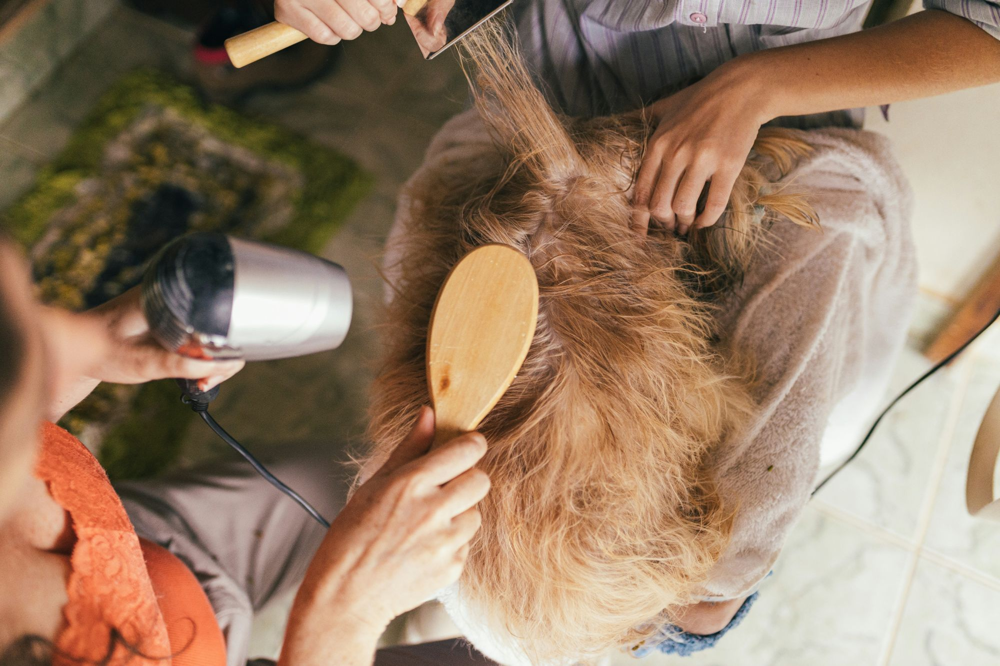

Stichting Vakgenoten verbindt studenten van vakopleidingen die praktijkuren nodig hebben met buurtbewoners die een verzorgende dienst zoeken — gratis, dichtbij en met aandacht voor elkaar. Voortgekomen uit zeven jaar Kappersmodellen.nl.

Een student heeft oefenuren nodig voor school of examen. Een buurtgenoot wil graag verzorgd worden, maar let op de kosten. Vakgenoten brengt ze samen — en daar wordt iedereen beter van.
Leerlingen van kappers- en beautyopleidingen plaatsen een oproep wanneer ze een oefenmodel zoeken voor hun praktijkexamen of oefenuren.
Buurtbewoners die een knipbeurt of behandeling zoeken melden zich aan. Geen kosten, geen drempel — gewoon een afspraak in de buurt.
De student bouwt ervaring en zelfvertrouwen op, de buurtgenoot voelt zich verzorgd, en de wijk wordt een stukje hechter.
"Elke ontmoeting tussen een student en een buurtbewoner versterkt het sociaal weefsel van de stad."— Het uitgangspunt van Stichting Vakgenoten
Het bevorderen van sociale cohesie en gelijke kansen door digitale en fysieke community-platforms die mensen gratis verbinden met vakkundige diensten.
Voor wie de gang naar de kapper te duur is geworden — ouderen, mensen met een krappe beurs, nieuwkomers. Bij ons is iedereen welkom, altijd gratis.
Studenten van het ROC van Amsterdam en andere vakopleidingen hebben oefenuren nodig om hun vak te leren. Wij geven ze een veilige, echte plek om te groeien.
Elke ontmoeting versterkt het weefsel van de wijk. We werken samen met buurtteams, welzijnsorganisaties en lokale partners in de stadsdelen.
Afspraken verlopen via begeleide opleidingen en een community die al zeven jaar bestaat, met verificatie van gebruikers en zorgvuldige begeleiding.
Wij geloven dat maatschappelijke impact aantoonbaar moet zijn. Voor 2026–2027 hebben we concrete, meetbare doelen gesteld voor onze eerste drie werkgebieden.
Stichting Vakgenoten professionaliseert het werk van de Kappersmodellen.nl-community. We kiezen bewust voor een transparante inrichting waarin maatschappelijke doelen en uitvoering zuiver gescheiden zijn.
Samen verbinden · gelijke kansen · vakmanschap
We starten waar we het hardst nodig zijn. In elk werkgebied is een vaste community manager het aanspreekpunt voor bewoners, studenten en buurtpartners.
Actieve community met eigen buurtpagina, evenementen en samenwerkingen met lokale buurtteams.
Eigen community manager, buurtevenementen en verbinding met welzijnsorganisaties in het stadsdeel.
Kleinschalig en dichtbij: matches en ontmoetingen voor bewoners van Weesp en Driemond.
Wat begon met kappers groeit uit naar alle verzorgende vakken — en naar steden door heel Nederland en daarbuiten.
Drie stadsdelen actief met eigen community managers, een eigen platform naast de bestaande community, en structurele samenwerkingen met opleidingen en buurtteams.
Uitbreiding naar alle Amsterdamse stadsdelen en brancheverbreding: nagelstyling, schoonheidsverzorging en visagie — overal waar studenten oefenuren nodig hebben.
Stad voor stad bouwen we lokale gemeenschappen op, met opleidingen en buurtpartners als verankering. Het model is universeel — met lokale partners groeit het ook internationaal.
Stichting Vakgenoten bouwt aan sociale cohesie met een bewezen aanpak, meetbare doelen en een transparante organisatie. We werken graag samen met fondsen, stadsdelen en vakopleidingen die willen investeren in toegankelijke zorg en kansen voor jong vakmanschap. Ons beleidsplan en onze projectbegrotingen sturen we u graag toe.
hello@stichtingvakgenoten.nl · Amsterdam